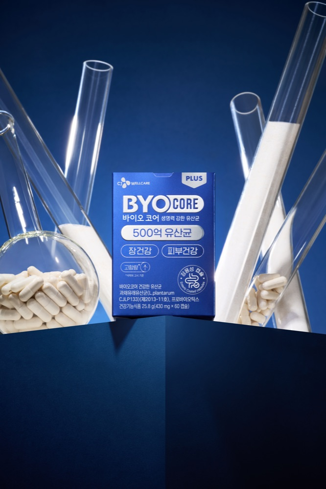
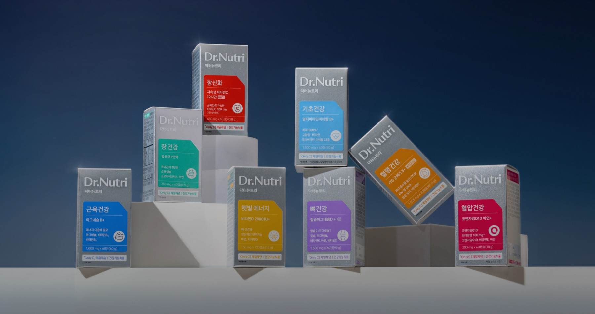
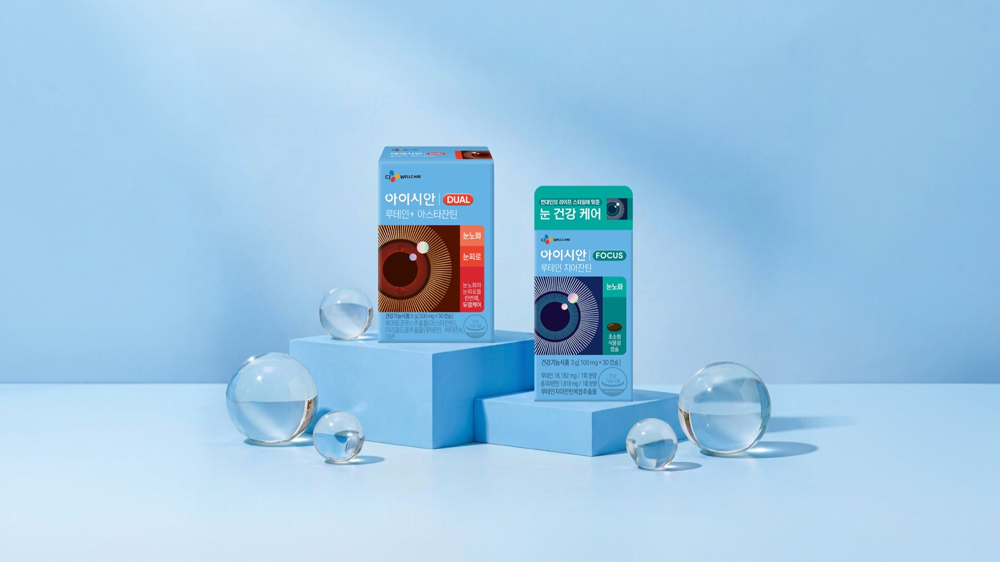
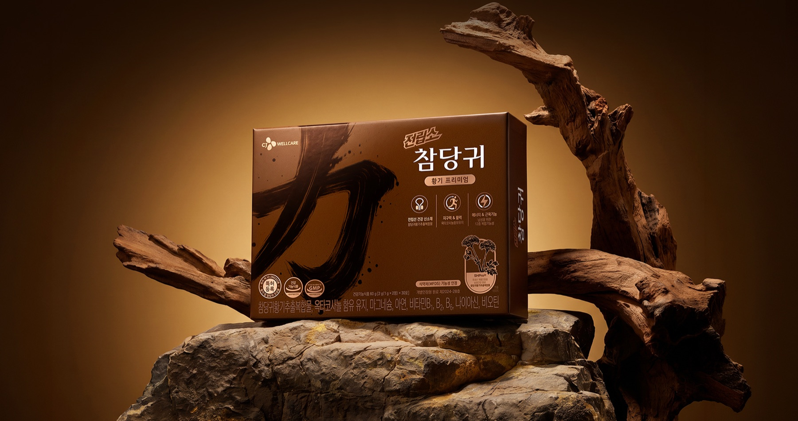
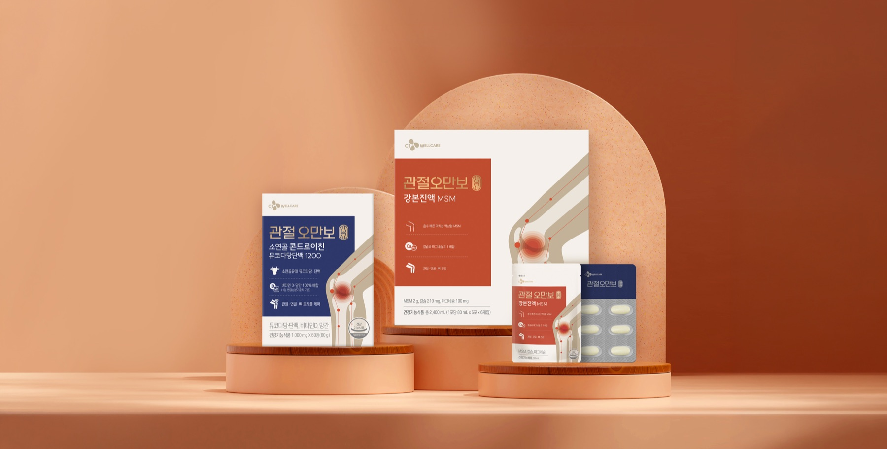
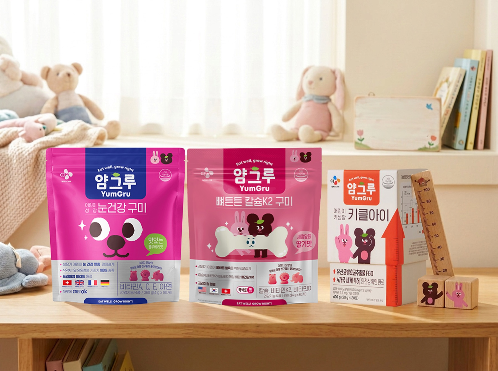
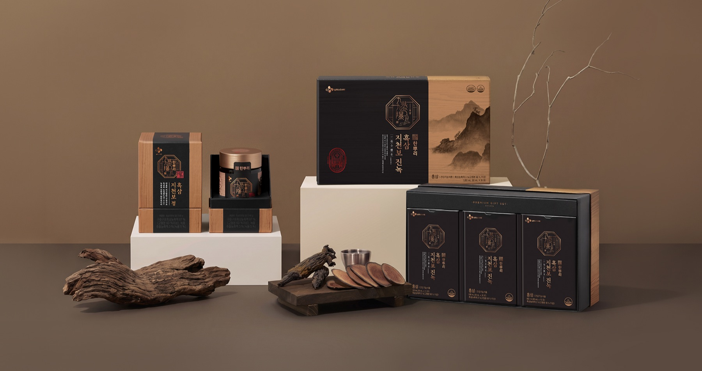

Products
12개 브랜드,
하나의 기준
세대를 넘어 이어온 소비자의 선택과 신뢰를 바탕으로, 오래 사랑받는 브랜드를 만들어갑니다. 모든 브랜드는 과학적 근거에서 출발합니다.
요즘 가장 신경 쓰이는 건?

바이오코어
유산균의 코어가 남다르니깐!
고함량, 고기능성 유산균의 기준

맥플랜 MAC PLAN
식이섬유 섭취의 새로운 기준,
미생물 밸런스를 위한 MACPLAN

이너비 InnerB
Always Be Me,
균형 잡힌 이너뷰티 루틴을 전하는 브랜드

멜라메이트
나의 첫 나이트 메이트,
오늘 밤은 혼자가 아니야
메모리메이트 & 브레인메이트
선명하고 또렷한 하루,
매일의 일상을 지키는 두뇌 건강 케어

닥터뉴트리 Dr.Nutri
나만의 건강관리 솔루션,
좋은 원료와 합리적 가격으로 꾸준하게

아이시안
현대인의 맞춤 눈 건강 케어,
EYE + SEE + 안(安)

전립소
남성의 자신감과 활력,
전립선 건강 솔루션

관절오만보
오만보를 걷는 열정을 만드는 관절 케어 브랜드
CJ더마켓에서 보기
얌그루
잘 먹고 바르게 성장하는 우리 아이를 위한 건강 솔루션
CJ더마켓에서 보기
한뿌리
정통 보양의 변치 않는 기준,
시간과 정성으로 빚어낸 한뿌리

제일건강원
매일의 일상을 깨우는 새로운 기준,
현대인을 위한 제일건강원
안내브랜드 상세 페이지는 바이오코어를 대표 템플릿으로 만들었어요. 다른 브랜드 카드는 CJ더마켓으로 이동해요.
Science Inside
모든 브랜드 안에는
과학이 있습니다
브랜드마다 출발점이 된 기술과 근거를 함께 보여드립니다.
CJLP133
개별인정형 균주
국내 개발 유산균주 최초 개별인정형(2013). 국내 상온 최대 보장균수 500억 CFU.
근거 보기MAC
미생물의 영양원
CJ바이오사이언스의 마이크로바이옴 연구 역량을 활용한 국내 최초 MAC 웰니스 브랜드.
근거 보기SHPro®
참당귀 · 황기 조성물
농촌진흥청과 국내 연구진이 공동 개발한 전립선 건강 개별인정형 원료. 45~75세 남성 84명 12주 인체적용시험.
근거 보기구증구포 흑삼 기술
아홉 번 찌고 말린 흑삼과 저분자 사포닌 기술. 구증구포 흑삼 FDA NDI 승인(2016).
근거 보기Shop
CJ웰케어 제품은
CJ더마켓에서 만나보세요
안내건강기능식품은 질병의 예방 및 치료를 위한 의약품이 아닙니다. 제품 정보와 문구는 기존 CJ웰케어 홈페이지 브랜드 소개를 인용했습니다.